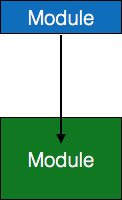

source: https://www.tutorialspoint.com/software_engineering/software_analysis_design_tools.htm
Software Analysis and Design Tools
Software analysis and design includes all activities, which help the transformation of requirement specification into implementation. Requirement specifications specify all functional and non-functional expectations from the software. These requirement specifications come in the shape of human readable and understandable documents, to which a computer has nothing to do.
Software analysis and design is the intermediate stage, which helps human-readable requirements to be transformed into actual code.
Let us see few analysis and design tools used by software designers:
Data Flow Diagram
Data flow diagram is graphical representation of flow of data in an information system. It is capable of depicting incoming data flow, outgoing data flow and stored data. The DFD does not mention anything about how data flows through the system.
There is a prominent difference between DFD and Flowchart. The flowchart depicts flow of control in program modules. DFDs depict flow of data in the system at various levels. DFD does not contain any control or branch elements.
Types of DFD
Data Flow Diagrams are either Logical or Physical.
Logical DFD
This type of DFD concentrates on the system process, and flow of data in the system.For example in a Banking software system, how data is moved between different entities.
Physical DFD
This type of DFD shows how the data flow is actually implemented in the system. It is more specific and close to the implementation.
DFD Components
DFD can represent Source, destination, storage and flow of data using the following set of components -
Entities
Entities are source and destination of information data. Entities are represented by a rectangles with their respective names.
Process
Activities and action taken on the data are represented by Circle or Round-edged rectangles.
Data Storage
There are two variants of data storage - it can either be represented as a rectangle with absence of both smaller sides or as an open-sided rectangle with only one side missing.
Data Flow
Movement of data is shown by pointed arrows. Data movement is shown from the base of arrow as its source towards head of the arrow as destination.
Levels of DFD
Level 0
Highest abstraction level DFD is known as Level 0 DFD, which depicts the entire information system as one diagram concealing all the underlying details. Level 0 DFDs are also known as context level DFDs.
Level 1
The Level 0 DFD is broken down into more specific, Level 1 DFD. Level 1 DFD depicts basic modules in the system and flow of data among various modules. Level 1 DFD also mentions basic processes and sources of information.
Level 2
At this level, DFD shows how data flows inside the modules mentioned in Level 1.
Higher level DFDs can be transformed into more specific lower level DFDs with deeper level of understanding unless the desired level of specification is achieved.
Structure Chart
Structure chart is a chart derived from Data Flow Diagram. It represents the system in more detail than DFD. It breaks down the entire system into lowest functional modules, describes functions and sub-functions of each module of the system to a greater detail than DFD.
Structure chart represents hierarchical structure of modules. At each layer a specific task is performed.
Here are the symbols used in construction of structure charts -Here are the symbols used in construction of structure charts -
Module
It represents process or subroutine or task. A control module branches to more than one sub-module. Library Modules are re-usable and invokable from any module.
Condition
It is represented by small diamond at the base of module. It depicts that control module can select any of sub-routine based on some condition.
Jump
An arrow is shown pointing inside the module to depict that the control will jump in the middle of the sub-module.

Loop
A curved arrow represents loop in the module. All sub-modules covered by loop repeat execution of module.
Data flow
A directed arrow with empty circle at the end represents data flow.
Control flow
A directed arrow with filled circle at the end represents control flow.
HIPO Diagram
HIPO (Hierarchical Input Process Output) diagram is a combination of two organized method to analyze the system and provide the means of documentation. HIPO model was developed by IBM in year 1970.
HIPO diagram represents the hierarchy of modules in the software system. Analyst uses HIPO diagram in order to obtain high-level view of system functions. It decomposes functions into sub-functions in a hierarchical manner. It depicts the functions performed by system.
HIPO diagrams are good for documentation purpose. Their graphical representation makes it easier for designers and managers to get the pictorial idea of the system structure.
In contrast to IPO (Input Process Output) diagram, which depicts the flow of control and data in a module, HIPO does not provide any information about data flow or control flow.
Example
Both parts of HIPO diagram, Hierarchical presentation and IPO Chart are used for structure design of software program as well as documentation of the same.
Structured English
Most programmers are unaware of the large picture of software so they only rely on what their managers tell them to do. It is the responsibility of higher software management to provide accurate information to the programmers to develop accurate yet fast code.
Other forms of methods, which use graphs or diagrams, may are sometimes interpreted differently by different people.
Hence, analysts and designers of the software come up with tools such as Structured English. It is nothing but the description of what is required to code and how to code it. Structured English helps the programmer to write error-free code.
Other form of methods, which use graphs or diagrams, may are sometimes interpreted differently by different people. Here, both Structured English and Pseudo-Code tries to mitigate that understanding gap.
Structured English is the It uses plain English words in structured programming paradigm. It is not the ultimate code but a kind of description what is required to code and how to code it. The following are some tokens of structured programming.
IF-THEN-ELSE,
DO-WHILE-UNTIL
Analyst uses the same variable and data name, which are stored in Data Dictionary, making it much simpler to write and understand the code.
Example
We take the same example of Customer Authentication in the online shopping environment. This procedure to authenticate customer can be written in Structured English as:
Enter Customer_Name
SEEK Customer_Name in Customer_Name_DB file
IF Customer_Name found THEN
Call procedure USER_PASSWORD_AUTHENTICATE()
ELSE
PRINT error message
Call procedure NEW_CUSTOMER_REQUEST()
ENDIF
The code written in Structured English is more like day-to-day spoken English. It can not be implemented directly as a code of software. Structured English is independent of programming language.
Pseudo-Code
Pseudo code is written more close to programming language. It may be considered as augmented programming language, full of comments and descriptions.
Pseudo code is written more close to programming language. It may be considered as augmented programming language, full of comments and descriptions.
Pseudo code is written more close to programming language. It may be considered as augmented programming language, full of comments and descriptions.
Example
Program to print Fibonacci up to n numbers.
void function Fibonacci
Get value of n;
Set value of a to 1;
Set value of b to 1;
Initialize I to 0
for (i=0; i< n; i++)
{
if a greater than b
{
Increase b by a;
Print b;
}
else if b greater than a
{
increase a by b;
print a;
}
}
Decision Tables
A Decision table represents conditions and the respective actions to be taken to address them, in a structured tabular format.
A Decision table represents conditions and the respective actions to be taken to address them, in a structured tabular format.
Creating Decision Table
To create the decision table, the developer must follow basic four steps:
- Identify all possible conditions to be addressed
- Identify all possible conditions to be addressed
- Create Maximum possible rules
- Create Maximum possible rules
Decision Tables should be verified by end-users and can lately be simplified by eliminating duplicate rules and actions.
Example
Let us take a simple example of day-to-day problem with our Internet connectivity. We begin by identifying all problems that can arise while starting the internet and their respective possible solutions.
We list all possible problems under column conditions and the prospective actions under column Actions.
|
Conditions/Actions |
Rules |
| Conditions |
Shows Connected |
N |
N |
N |
N |
Y |
Y |
Y |
Y |
| Ping is Working |
N |
N |
Y |
Y |
N |
N |
Y |
Y |
| Opens Website |
Y |
N |
Y |
N |
Y |
N |
Y |
N |
| Actions |
Check network cable |
X |
|
|
|
|
|
|
|
| Check internet router |
X |
|
|
|
X |
X |
X |
|
| Restart Web Browser |
|
|
|
|
|
|
X |
|
| Contact Service provider |
|
X |
X |
X |
X |
X |
X |
|
| Do no action |
|
|
|
|
|
|
|
|
Entity-Relationship Model
Entity-Relationship model is a type of database model based on the notion of real world entities and relationship among them. We can map real world scenario onto ER database model. ER Model creates a set of entities with their attributes, a set of constraints and relation among them.
ER Model is best used for the conceptual design of database. ER Model can be represented as follows :
Entity
An entity in ER Model is a real world being, which has some properties called attributes. Every attribute is defined by its corresponding set of values, called domain.
For example, Consider a school database. Here, a student is an entity. Student has various attributes like name, id, age and class etc.
Relationship
he logical association among entities is called relationship. Relationships are mapped with entities in various ways. Mapping cardinalities define the number of associations between two entities.
Mapping cardinalities:
- one to one
- one to many
- many to one
- many to many
Data Dictionary
Data dictionary is the centralized collection of information about data. It stores meaning and origin of data, its relationship with other data, data format for usage etc. Data dictionary has rigorous definitions of all names in order to facilitate user and software designers.
Data dictionary is often referenced as meta-data (data about data) repository. It is created along with DFD (Data Flow Diagram) model of software program and is expected to be updated whenever DFD is changed or updated.
Requirement of Data Dictionary
The data is referenced via data dictionary while designing and implementing software. Data dictionary removes any chances of ambiguity. It helps keeping work of programmers and designers synchronized while using same object reference everywhere in the program.
Data dictionary provides a way of documentation for the complete database system in one place. Validation of DFD is carried out using data dictionary.
Contents
Data dictionary should contain information about the following
- Data Flow
- Data Structure
- Data Elements
- Data Stores
- Data Processing
Data Flow is described by means of DFDs as studied earlier and represented in algebraic form as described.
| = |
Composed of |
| {} |
Repetition |
| () |
Optional |
| + |
And |
| [ / ] |
Or |
Example
Address = House No + (Street / Area) + City + State
Course ID = Course Number + Course Name + Course Level + Course Grades
Data Elements
Data elements consist of Name and descriptions of Data and Control Items, Internal or External data stores etc. with the following details:
- Primary Name
- Secondary Name (Alias)
- Use-case (How and where to use)
- Content Description (Notation etc. )
- Supplementary Information (preset values, constraints etc.)
Data Store
Files
- Internal to software.
- External to software but on the same machine.
- External to software and system, located on different machine
Tables
- Naming convention
- Indexing property
Data Processing
There are two types of Data Processing:
- Logical: As user sees it
- Physical: : As software sees it